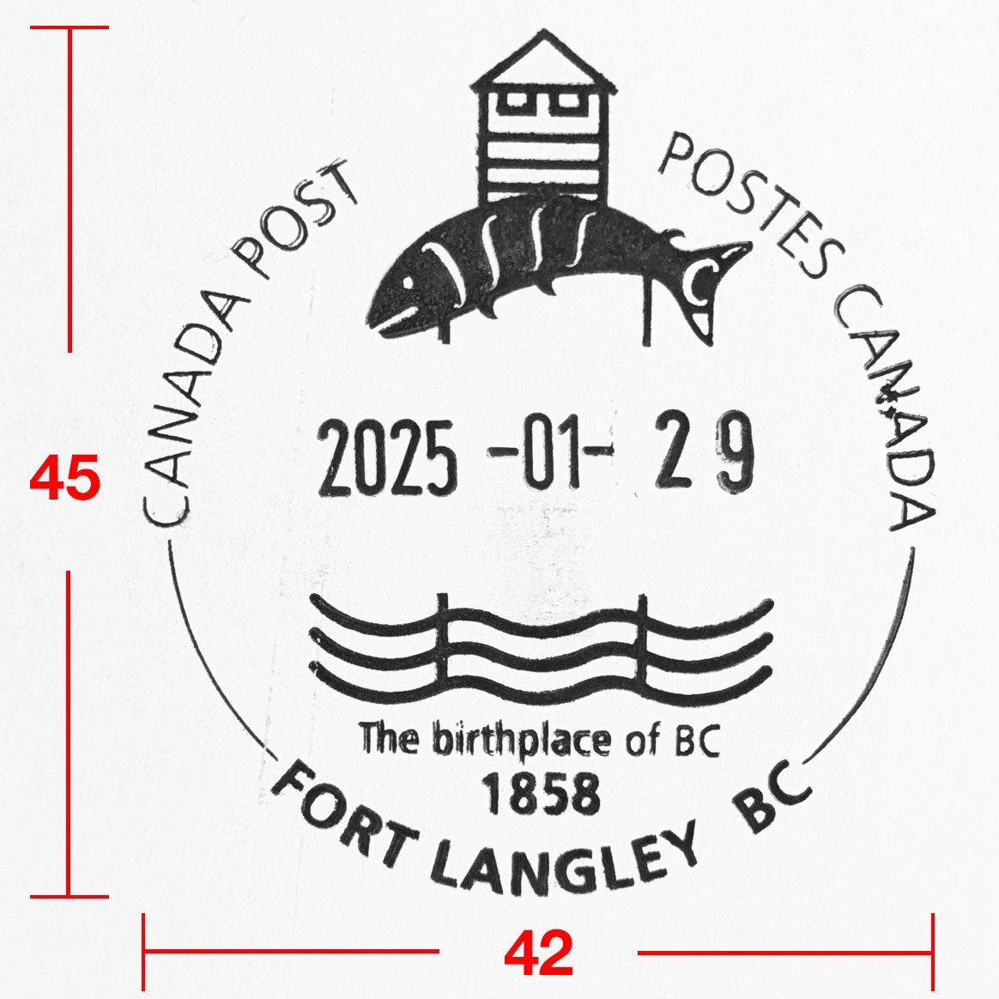

Langley STN Fort Langley pictorial cancel
The birthplace of BC – 1858
- Status
- Active
- Run dates
- ? to present
- Design
- "The birthplace of BC / 1858"; Indigenous symbol of fish; house; water
- Ink colour
- Black
- Designer
- Unknown
- Post office
- Langley STN Fort Langley
23277 Mary Ave
Langley, BC
V1M 1A0 - Subjects
- architecture, building, house, fish, indigenous art, water, first nation
Collect it by mail. Send your stamped covers, with a stamped return envelope, to the post office address above. How to collect pictorial cancels by mail · en français
 Maple Ridge STN WhonnockHumpback salmon
Maple Ridge STN WhonnockHumpback salmon Mount Lehman POMan
Mount Lehman POMan Surrey STN MainRoyal wedding
Surrey STN MainRoyal wedding Vancouver Main Retail Store POHaunted Canada
Vancouver Main Retail Store POHaunted Canada Steveston MuseumOld
Steveston MuseumOld